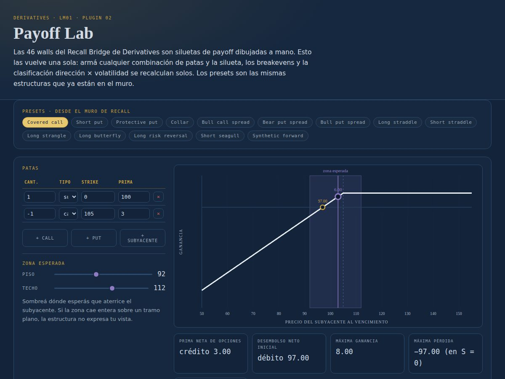
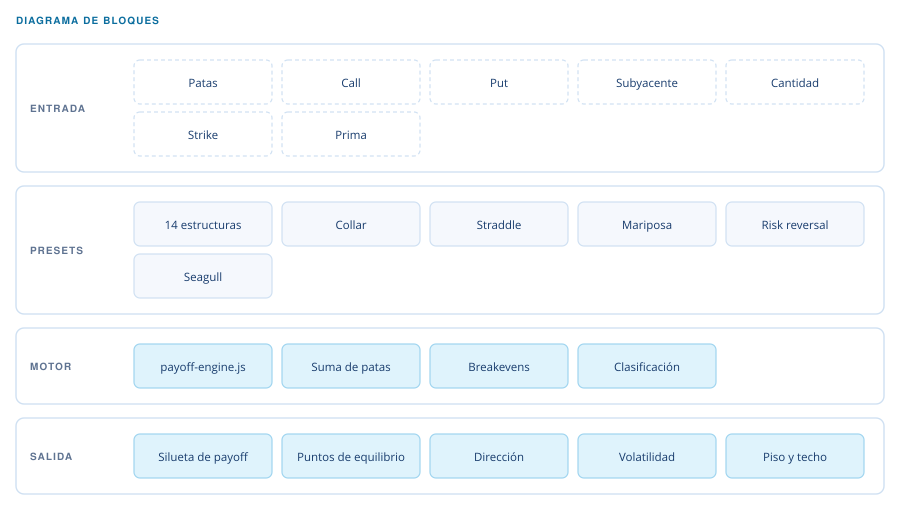

Atlas · Nivel III — Derivatives LM01
Laboratorio de Derivados
Cualquier combinación de opciones, con su silueta, sus breakevens y su clasificación calculados solos.

Qué hace
Se arman las patas —calls, puts y subyacente, con su cantidad, strike y prima— y el lab dibuja el perfil de resultado al vencimiento, marca los puntos de equilibrio y clasifica la estructura por dirección y por exposición a volatilidad. Trae catorce estructuras precargadas.
El concepto. Las estrategias con opciones suelen estudiarse como catorce siluetas memorizadas por separado: el collar, el straddle, la mariposa. Pero todas son la misma operación —una suma de patas— y verlas como catálogo esconde eso. El lab invierte el orden: construyes la combinación y la silueta aparece sola. Entonces se nota que un collar y un bull call spread comparten forma, que el breakeven no es un dato que se memoriza sino donde la suma cruza cero, y que dirección y volatilidad son dos ejes independientes: se puede ser alcista y estar corto de volatilidad al mismo tiempo.
- JavaScript sin framework
- SVG
Cómo está compuesto
Los catorce presets son entradas al mismo motor, no catorce dibujos distintos.

Una sola operación
Catorce estructuras dejan de ser catorce dibujos y pasan a ser una suma de patas.
Dos ejes, no uno
Dirección y volatilidad se clasifican por separado: son independientes.
Breakeven calculado
No se memoriza: es donde la suma de las patas cruza cero.
Zona esperada
Se fija un piso y un techo para leer la estructura dentro del rango que importa.